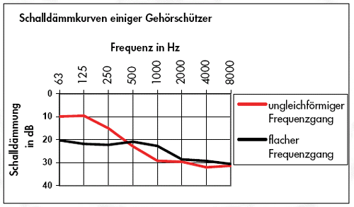

Der richtig ausgewählte Gehörschützer schwächt den Lärm soweit ab, dass das Ohr keinen Schaden mehr nimmt, aber nur soweit, dass wichtige akustische Informationen, z.B. Warnsignale, Sprache und Maschinengeräusche noch erkannt werden können.
Die Schalldämmung des Gehörschützers darf also nicht zu klein, aber auch nicht zu groß sein. Sie muss passen!
Die meisten Gehörschützer dämmen hohe und tiefe Töne unterschiedlich stark. Das führt zu einer Verfälschung des Klangeindrucks, was die Erkennung von Signalen und Sprache erschwert. Deshalb sollte an Arbeitsplätzen, an denen Kommunikation oder Signalerkennung erforderlich ist, der Gehörschützer einen möglichst flachen Frequenzgang haben.

Abb. 11: Schalldämmkurven typischer Gehörschützer
Kapselgehörschützer haben im Allgemeinen bei tiefen Frequenzen eine geringere Schalldämmung als Gehörschutzstöpsel. Die ungleiche Dämmung von tiefen und hohen Frequenzen führt meist zu schlechterer Sprach- und Signalverständlichkeit.
Gehörschützer mit gleichmäßiger Dämmung über alle Frequenzbereiche (= flache Schalldämmkurve) sind daher zu empfehlen. Dies betrifft insbesondere Personen mit Hörminderung.
Ziel der Auswahl ist das Erreichen eines Restschallpegels (Schalldruckpegel unter dem Gehörschutz) von 70 bis 80 dB(A), bzw. <135 dB(Cpeak).
Restschallpegel unter 70 dB(A) stellen eine Überprotektion dar und führen leicht zur Ablehnung durch den Benutzer. Pegel ab 80 dB(A) sind nicht empfehlenswert.
Restschallpegel unter dem Gehörschutz L’EX,8h von mehr als 85 dB(A) sind nicht zulässig.
Tabelle zur Auswahl von Gehörschutz nach der Lärm- und Vibrations-Arbeitsschutzverordnung und der BGR/GUV-R 194:
Tabelle 2: Beurteilung der Schutzwirkung von Gehörschutz
Am Ohr wirksamer Restschallpegel in dB(A) |
Am Ohr wirksamer Restspitzenschallpegel in dB(Cpeak) |
Beurteilung der Schutzwirkung |
> 85 |
> 137 |
nicht zulässig |
> 80 |
> 135 |
nicht empfehlenswert |
≤ 80 |
≤ 135 |
empfehlenswert |
< 70 |
- |
* |
Verfahren zur rechnerischen Prüfung auf Einhaltung der maximal zulässigen Expositionswerte und der entsprechenden Auswahl von Gehörschutz werden in den Anhängen 1 und 2 beschrieben.